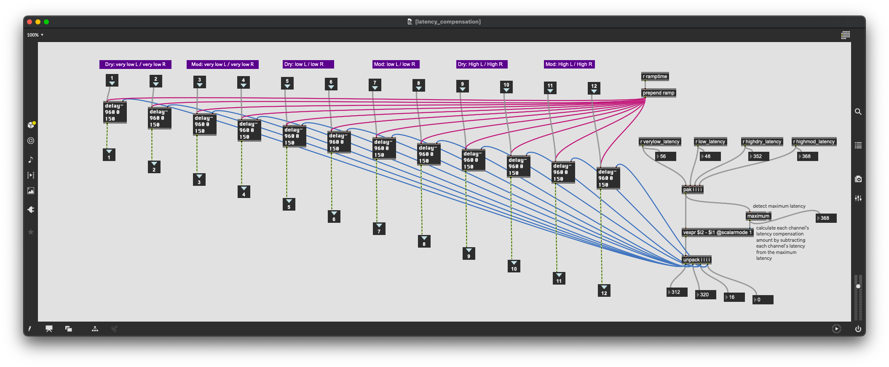

Max or Plugin Selector¶
Many effects in SousaFX are presented in a way that lets you choose between a max-native effect or an external audio plugin.
To choose, first turn off the audio engine by clicking the blue power button in the main window. Click the effect’s main menu to select Max or Plugin, then click the power button again to turn the audio engine back on. Your choice is auto-saved.
{kind=link}
{kind=link}
This selector is available for every effect in SousaFX except for the following:
- LFO
- Crossfade
- Loopers
- Stutter, Tremolo, Filters
- Kick Ducker
- FX Banks slots 2 - 4.
Selectable Effects¶
- Sustain EQ
- Attack EQ
- Octaver
- Sustain FX slot 1
- Attack FX slot 1
- Post-crossfade FX slot 1
- Low Pass Filter; only plugins supported are MF-101S and The Drop
- crossover filter; only plugin supported is ProQ3
- octaver compressor
- low crossover compressor
- high crossover attack compressor
- high crossover sustain compressor
- four delay sends; also supports external routing
- reverb send
- main reverb
- main compressor
- main limiter
- monitor mix EQ
Latency Compensation¶
Latency compensation is recalculated whenever a plugin loads, or an FX Bank selection changes. This ensures the lowest possible latency depending on which effects are in use. If a plugin parameter changes its plugin’s latency after said plugin loads, you must manually trigger a recalculation by clicking “check latency”.
{kind=link}